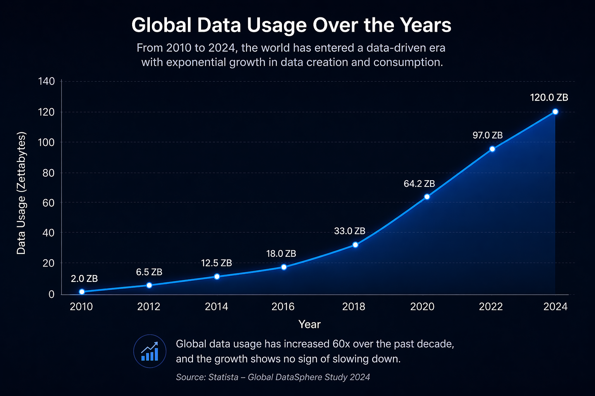
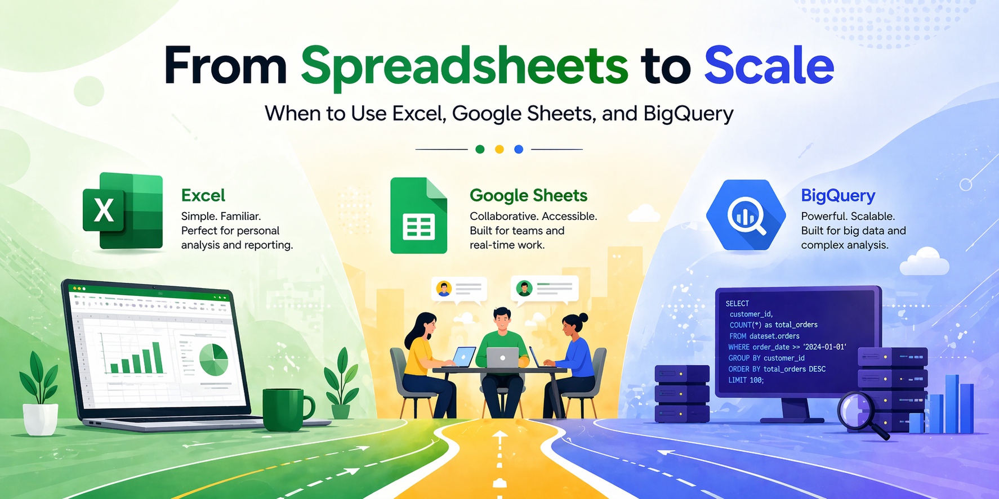
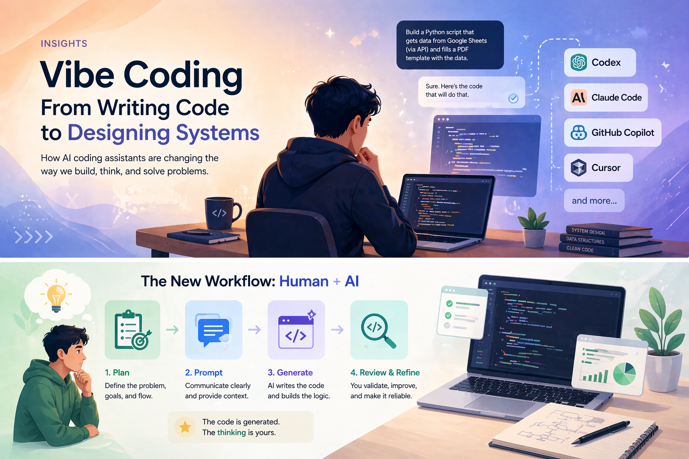

Why Data Pulled Me In And Why It Matters More Than Ever
March 30, 2026
A personal breakdown of how curiosity led me into Data Analytics, and why data, not AI, is the real driver behind modern systems.
Read MoreMarch 30, 2026
Most people see technology and think, "That's impressive." I've always thought, "How did that happen?"
That difference is what led me into data.
Growing up, I was drawn to systems: machines, gadgets, anything that had structure behind it. Math stood out because it was predictable. You follow a process, you get a result. No guessing, just logic. That way of thinking stayed with me, even when I moved into engineering.
In college, while studying Electronics Engineering, I noticed something. A lot of people were focused on outcomes. If something worked, that was enough. But I couldn't stop at that. I kept going deeper: what inputs caused this? What process made this possible? That habit of breaking things down didn't just help me understand systems better. It pointed me toward data without me realizing it yet.
Then it showed up in everyday life.
One moment that stuck with me was observing how YouTube behaves. It doesn't just show content, it predicts it. It knows what I'll likely watch, brings back familiar channels, introduces new ones that still fit my pattern, and quietly removes what doesn't match my behavior. That level of precision isn't random. It's built on patterns, history, and constant adjustment.
That's when it became clear: what feels like intelligence is actually data working behind the scenes.
Today, AI gets most of the attention. It's the headline, the buzzword, the thing everyone talks about. But strip everything down, and the reality is simple: AI is only as good as the data behind it. Every recommendation, prediction, or automated decision depends on data being collected, structured, and interpreted correctly. Without that, there's nothing to train, nothing to learn from, and nothing to improve.
What most people don't see is where things actually break.
It's not usually in the model. It's in the data.
Poor data quality quietly creates bigger problems than any algorithm can fix. Studies estimate that bad data costs companies around $12.9 million per year due to errors, inefficiencies, and wrong decisions. That's not a technical issue, it's a business problem. And it's common.
Because in the real world, data isn't clean.
It comes in fragmented, inconsistent, and often unreliable. Fields don't match. Formats break. Important values are missing. Duplicates exist across systems. If you try to build anything on top of that without fixing it first, the output will always carry those flaws.
That's where the real work is.
Not just analyzing data, but preparing it. Structuring it. Making it usable.
As I worked deeper into this space, I found myself focusing more on building systems that handle this part well. Instead of manually fixing files over and over, the goal becomes automation: tools that clean, validate, and standardize data so the process is repeatable. Because once the foundation is stable, everything else, analysis, reporting, and decision-making, becomes faster and more reliable.

At the same time, the scale of data around us keeps growing at a pace most people don't fully realize. We've already crossed 120 zettabytes of global data, growing roughly 30-40% every year, with most of that created in just the last few years. Every interaction, clicks, searches, and transactions, adds to that volume. But more data doesn't automatically create value. Without structure, it's just noise.
That gap between having data and actually using it well is where most organizations struggle.
And it's also where the opportunity is.
Looking back, choosing this field doesn't feel like a single decision. It feels like a natural direction. Curiosity, problem-solving, understanding systems, and noticing patterns all point here. Data analytics sits in that space where logic meets real-world impact. It's not just about numbers, but about clarity. Turning something messy into something usable. Turning something slow into something efficient. Turning uncertainty into something you can actually act on.
That's what makes data worth working on: not because it's everywhere, but because most of it still isn't being used the way it should be.
Browse the latest insights here so you can move between articles without going back to the homepage.
March 30, 2026
A personal breakdown of how curiosity led me into Data Analytics, and why data, not AI, is the real driver behind modern systems.
Read More
April 8, 2026
A practical journey through Excel, Google Sheets, and BigQuery: how each tool fits, where it breaks, and how combining them creates a scalable data workflow.
Read More
April 12, 2026
I started by writing every line of code manually. Now I build systems by describing them. This is how vibe coding changed the way I think and work.
Read MoreApril 8, 2026
A practical journey through Excel, Google Sheets, and BigQuery: how each tool fits, where it breaks, and how combining them creates a scalable data workflow.
Read MoreApril 12, 2026
I started by writing every line of code manually. Now I build systems by describing them. This is how vibe coding changed the way I think and work.
Read More
April 21, 2026
The most valuable data is often the hardest to see. Discover how Google Analytics and Microsoft Clarity turn invisible user actions into something you can actually understand.
Read More